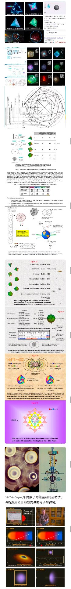

D:/AAA我的文件 ｜ 全部相对路径（整个目录搬走也能点开）｜
11 组 · 109 个页面 · 每条第二列就是"这页在讲什么"的一句话（2026-10-24 复核）
144000 = 12 × 12000 → 20000Ω → Nemescope 荧光图），
把多个主题压在一张长图里。原图只有 233 px 宽，所以这里按原尺寸显示、不做放大——放大只会糊。
要看细节请点图开原图。
E:/飞碟核心发明家/schauberger/无工质推进/ 的两份 PDF（101 页 + 152 页）与七份解读 md，
md 与 12 张关键页截图已抄到 无工质推进/_src/，整个 D 盘目录搬走也能照常打开。24_searl_SEG/瑟尔讲解所需nb/（瑟尔讲解用的 Wolfram nb 网页版，环面一族 4 页 + 滚筒源版 + 多面体/多边形反射 + 频率弦 + 勾股树），按上下文分插进 ④⑤⑥⑧ 四组、而不是塞成一堆：多面体 → ④（Anu 的正多面体几何）、多边形反射＋频率弦 → ⑤（与画形仪/克拉德尼同族的"图形"）、环面 4 页＋滚筒源版 → ⑥（紧挨「幻方环面共形与托鲁斯分形嵌套」）、勾股树 → ⑧（紧挨勾股弦外之音）；另加 ⑦ 的《EEQT 量子分形 · 混沌游戏画廊》（原本只在 36 小时制 index 里链着、总入口点不到）。同时改正页头计数 82 → 102（此前已累计到 92，标注是旧的）。
_probe_keely 96 → 115、新增 _probe_sphere 197，全套 26 脚本 1296 项 0 FAIL。这一组是给 PKS_千禧难题_GitHub版 那 976 份 md 补的门面：以前只有目录树和一堆 md，没有一个"一眼看懂全貌"的入口。
三页用手写 three.js 实时渲染（_vendor/three.min.js），不是截图，拖一下就知道形状怎么来的；
两页是盘点表与 Canvas 力导向图。五页都是打开即用、无需联网。
| 页面 | 一句话：这页在讲什么 |
|---|---|
| PKS 五层树 · 3D 总览新 PKS_千禧难题_GitHub版/AAA_PKS五层树_3D总览.html | 整个仓库的门面：用可拖拽的 3D 把「a·b=1 → 双曲锥 → 蛋形/螺旋/波纹 → 工程件与七题 → 万物互联」这五层各画一个形态， 右侧配该层一句话 + 该层全部入口，下面还有「十二个目录各一句话」索引表。不点进任何 md 也能知道 976 份文件长在哪根枝上。 |
| 蛋形与双锥 · 3D 参数台新 PKS_千禧难题_GitHub版/01_基础理论/… | 形状层的放大镜：把仓库原方程 x²+y²=1/(b−z·sin a)²−(z·cos a)² 做成实时曲面，
两个滑条（锥倾角 a、截距 b）拖一拖，就能看到「a=0 时退化成球」、蛋怎么变成沙漏；右边同步画剖面曲线并算长宽比。
页面里还写了一个我自己算错的口径坑（k_E 不是长宽比），别混用。2026-10-18 更正：「波纹」模式原来画成 z=A·sin(nθ)（沿圆周起皱）是错的，已按 代码_波纹盘/22_双波纹盘最佳截面曲线.py 重写为双截面旋成——波纹沿半径方向，剖面图里同步画出蓝 A / 绿 B 两条截面曲线。 |
| 千禧七题 · 诚实盘点改 PKS_千禧难题_GitHub版/04_学术论文/… | 给七道千禧难题分级：用"文档体量 + 有没有可跑代码 + 有没有自认的否证"三个可核对指标， 把六道未解题分成 B/C/D 三级（庞加莱列为 A 级对照），并原样摘出仓库自己撤回过的四条结论（NS 的 ⟨Q⟩ 伪影、3-4-5 与铜氧化物无对应等）。 2026-10-18 新增 §二 NS 专项：把 Clay 的 A/B/C/D 四条摊平，讲清"OpenAI 证的是 C/D（有外力），A/B（无外力）一个字没变"， 并回答"换个更聪明的模型能不能搞定 A/B"（结论：不能，缺的是数学工具不是算力）。 |
| 数学物理跨界关联 · 175 件工具改 PKS_千禧难题_GitHub版/04_学术论文/… | 一张能点的数学地图：175 个节点从「计数、位值制」一路铺到「层、概形、辛几何、随机分析、多重网格、Lean」，
500 条连线每条都写了理由（如"概形 = 环的谱 + 结构层"）。点节点看它站在谁肩膀上、通向哪里；点连线看"为什么连"；
按 11 个分类分色块、可搜索、可开关。原版（元宝 93 节点）已归档在旁边，本页删掉了它一条错边（AI 722 篇 → NS）。 2026-10-18 新增「∞ 常数谱系表」（左栏按钮）：29 个数学常数逐条 grep 出来的用途索引——√2 / √3 / √5 / ∛2、π / e / ln2 / π÷ln2、φ / 1/φ / χ / √(2/3)、δ=4.669 / α=1/137.036 / 黄金角 137.5° / 贝塞尔零点 j₀,₁ 与 j′₀,₁。每条都写清它在这堆 .py 里干了什么活，并点得进原文件；连试过但被否掉的那一处也留着（2ln2=1.3863 打不出三环 1:2:3，弃用改 √n）。另附 同名 md 索引。页末五个横切结论：① 一条螺旋 r=2^(−θ/π) 串起 √2、1/2、1/e ② ∛2 = 2^(4/12) 既是立方倍积又是钢琴大三度 ③ 有理/无理的差别在 Keely 那里是闭合残差 ④ 漂亮比例多来自等面积 ⑤ 边界：Keely 装置数字里 Fibonacci 一个都没出现。2026-10-19 新增：α 那条「蛋形尖端 / 钝端曲率比」已做成可调参验证台 —— 点这里（曲率圆 / 曲率梳 / 反解，结论与代价都在页内现算）。 §5 白银比边界：反解 k_E = 2.409930 与白银比 1+√2 = 2.414214 只差 δ = 0.004283（0.17742%，1/563.6）。解析上该族判别式 D = (k²−2k−1)² / [(1+k)²(1+tan²θ)] ⇒ 白银比是二重根，此处的 R_tip/R_blunt 精确为 0（尖点），所以那 0.177% 不是精度误差，而是 α 的全部；一阶关系 R比 = (1+1/√2)·δ。老师提出「这点差别来自外宇宙灵魂／本宇宙灵魂进出的交互」，页内 §5.4 已把这句话翻成三条可证伪判据（最强一条：换一个几何族去测 δ 是否仍为 0.17742%）。 2026-10-19 另加：还有另一种画法 —— Larry Reed《Quantum Wave Mechanics》第 20／21 章的电子环面 / 闭环驻波模型（α 读作 R_c / R_tbw，即约化康普顿波长 ÷ 玻尔半径）。已按同一组几何关系重画成可拖拽 3D 环面（可调绕数 m,n），并把图内 22 条公式逐条用 CODATA 2018 复算：环面对照台（结论：5 条恒等式成立、3 处量纲错、2 处指数笔误；α 同样是输入而非输出）。 2026-10-24 大改：图本身93 → 134 → 175 件工具、243 → 347 → 500 条连线，拆成 11 个分类； 旁边挂起 220 个问题（问上帝 144 + 第二批 64 + 社会 12；另有 29 条常数谱系表，那是常数用途索引，不算在问题里）、0 个确定答案。同日新增四块正文（都在同一页里，滚到下面就能看见）： ① 结语《这张图上，没有你自己》：一条数学地图走到最后，得自己说出「数学到此退场」。页内点明三条边界 —— 不能告诉你该研究什么（题选错，工具越好浪费越大）、不能替你签字（判据可以教，责任不能代）、不能回答「为什么值得活下去」（那不是数学问题）。 并拆了"更快 / 更公平 / 更聪明"三个常见答案的共同毛病：都在调参数，没有一个去动目标函数；再指出每解决一个问题、边界上会长出三个新问题 ⇒ 「到了」的那天从不出现，只剩两条分岔：把边界当墙（墙内继续优化）或当门（出路是个动作，不是地点）。 ⚠ 作者明说：选 B 是全页唯一一次用信念而不是判据下的判断，所以特意标出来 —— 标出来才守得住这一页的规矩。 ② 置顶议题《降低验证成本，而不是降低连接成本》（2026-10-23，1432 字）：四步排序与判决协议；同时把归属改正 —— 「虚体世界」一整套概念属朱念麟（云南大学物理系退休教授、原云南大学人体科学研究所副主任，2011-12 与宫哲兵、邵邻相自筹建「新空间 1025 实验室」）， 「阿赖耶识」是佛学唯识学的词、文中属借喻；上一版把整篇都记在朱念麟名下是错的，已改，连图片文件名一起改。 ③ §7《AI 之后，孩子该学什么》（14 小节）：三句话立骨 —— AI 把「算」变便宜 ⇒「会算」不再值钱、把「判断」变贵 ⇒「会判断」才是教育； 真正稀缺的不是原理，是「这个原理在哪一步失效」；「提高品质」在数学上不是做得更好，是把方差压下去。 用「平替三问」（AI 一分钟做得完吗 / 做完人能判对吗 / 输入里有多少只有现场才知道）切四格，结论是教育要往「AI 会做 + 后果只能自己扛」的签字区搬 —— 那是唯一在扩大的格子。 ④ 8 个能亲手做出来的例子（一条从「现象」到「装置」的路线，每个都指向本项目真实页面、可点开核对）： 两个摆画出一族花 · 鸡蛋为什么一头尖（斜切双曲锥）· 沙子自己排队（本征值）· 钢琴的 Mi 差 13.686 音分（纯律 15/8）· 三人棋的对称性（S₃ 破没破立刻可算）· 铜棒多久变热（Fo = αt/L²，τ ≈ 4L²/π²α，铜 0.3 m ≈ 332 s）· 「省 90% 能源」值多少钱（渗透率一动结论就翻；SRI 那份 155 页报告自己否掉了 11 个场景）· 勾股在三维变成面积平方和（德古阿定理，用边长平方和去验必错，而这个错本身就是结论）。 |
| ★ PKS 代码族 · 3D 参数台（六族）新 PKS_千禧难题_GitHub版/01_基础理论/… | 把六个 代码_* 目录的"最后一代 py"各搬成一格可拖参数的 3D：
双波纹盘（本轮纠正：波纹沿半径不是沿圆周，蛋的 x/y 两分量拆成两张截面旋成双面盘）、
蛋螺旋（斐波那契 k,b + √n 放大，14 层叠成螺旋壳）、螺旋锥管（指数螺旋 + 非线性扭转 + 47 带 φ 幂加密波纹）、
蛋形均轮（托勒密偏心，读数直接标"它是外旋轮线不是蛋"）、钟形水轮（蛋半径母线 + Frenet 扫掠叶片 + 开方断开点）、
双曲锥（曲率色图 + 面上流线，照抄脚本"不声称解了 NS"）。
先说清楚了扫描结果：36 个 py 里 4 族有 md、2 族没有；原脚本会出 NaN / 开方为负的地方一个都没偷偷修掉，全在读数里报出来。
配套 说明 md（六族完整方程 + 三处降级说明）。 |
源头是元宝的一次长对话：46 轮、79,416 字、264 条来源。原始分享页是 JS 应用，正文藏在 __NEXT_DATA__ 里，已完整取出归档。
下面四页按老师第 29 问的原话拆：π 的机器 / Keely 技术 / 两者关联。
| 页面 | 一句话：这页在讲什么 |
|---|---|
| 00 · 对话全文 bashar的实验/12进制与pi_元宝对话_2026-10-18/ | 46 轮逐字原文，每轮挂出它引用的来源，22 处 [citation:N] 变成可点上标。要核对"它到底怎么说的"就看这份，包括它自己认过的错。 |
| 01 · 来源清单 | 264 条 URL 按 163 个站点分组，标注每一条被哪几轮引用（svpwiki 独占 55 条）。要把 B 级结论升到 A 级，从这里出去查原文。 |
| 子页① π 的自然涌现机器 | 三台"会自己冒出 π"的机器（格点计数 / 十二重环 / 热核）+ 12 的三条硬来源 + ℤ[ζ₁₂] + 12→144→1728 + 为什么落地在 Ewald/PME。 想造一台算出 π 的机器，看这页。 |
| 子页② Keely 技术与装置 | 五台装置的几何 + Trexar 3:6:9 导线 + 用"蓟花绒毛"反推悬浮球规格 + 60 Hz/12 kHz 为什么出局 + 谱学禁区。 要拿 Keely 的具体尺寸/频率去用，看这页。 |
| 子页③ 两者的关联 | 12 进制 π 与 Keely 的十二个接触点逐条判级，附归属更正与 8 条认错清单（哪些是元宝说错、哪些是我们自己先说错）。 要判断"这两件事到底有没有关系"，看这页的判级表。 |
| （源文件）对话全文 .md | 纯文本版，便于全文检索、复制、喂给别的模型。内容与上面的 HTML 一致，只是没有样式。 |
这批是 7 月的笔记，当时停在「12 进制电脑能不能算更快」；10 月那场对话把它答完了：进制不影响速度，速度靠级数；12 的真身是 ℤ[ζ₁₂] 的判别式 144。
| 页面 | 一句话：这页在讲什么 |
|---|---|
| π 与 12 的深层关系 · 总览 | 这条线的总入口：把"12 进制算 π 会不会更快"这个问题拆成三问，并给出当时的结论与后来被推翻/修正的部分。 |
| Chudnovsky 公式的 12 之谜 | 为什么最快的 π 级数里全是 12 的倍数：1728 = 12³ 是模形式 j 不变量在 q 展开里的常数项，不是巧合而是 ℤ[ζ₁₂] 的结构所致。 |
| π · 12 进制 · 黑洞 T⁴ | 三条线交叉：12 进制、黑洞热力学里的 T⁴ 律、以及 12 在其中的位置。偏探索性，当作思路记录读。 |
| README · π 计算与出图程序说明 | 怎么跑那批算 π 的脚本、怎么出图。只想动手复算的人看这份就够。 |
| 计算 π 最快的方法.pdf | 原始资料（PDF），上面几篇 md 的素材来源。 |
这一组是把 Keely 的"同情振动"逐项翻译成现代声子物理，每一页只回答一个问题，且都标了可证伪判据。
| 页面 | 一句话：这页在讲什么 |
|---|---|
| ★★ 总入口 · Keely 与现代声子物理对比 PKS_千禧难题_GitHub版/02_应用科技/25_keely/ | K 系列的总目录与判级说明：九页各管什么、哪些结论必须先对齐（9 重环机 / 1,620,000=×3⁴ / 悬浮球是密封的）。从这页开始，别单点某一页。 |
| K1 标度律 · Chladni 到 Lamb | 振动频率随尺寸怎么变：从 Chladni 板的 f∝1/L² 到 Lamb 波，给出 Keely 那套"越小的东西频率越高"的现代对照式。 |
| K2 层级频率链 · 八度罗盘与 3 的幂 | Keely 的"层级"到底怎么算：20,000 → ×3² → ×3⁴ = 1,620,000 这条链，以及再往上为什么是 ×3^(2ⁿ) 而不是继续 ×3⁴。 |
| K3 Trexar 几何 · √n 等体积定案 | 三根不同金属线为什么要等体积：√n 比例的几何定案，以及 3:6:9 的来历。要复原导线就看这页。 |
| K4 核尺度检验 · GDR 可证伪判据 | 把 Keely 的频率推到核尺度会怎样：用巨偶极共振（GDR）给出一个能证伪的判据——这页的价值在于"能被打死"。 |
| K5 频率梳前沿 · 锁模激光到声子梳 | 现代"频率梳"是什么：锁模激光 → 光频梳 → 声子梳的器件演进，为 K7 的对照做准备。 |
| K6 术语对照 · Keely 与现代科学 | 32 条术语逐条判级（绿 12 条真能对上 / 黄 11 条形似 / 红 9 条对不上）。想知道"哪个词是真的、哪个是编的"，只看这页。 其中"质量弦"已由我们下调为 ◐（三球同重却三弦，逻辑上不成立）。 |
| K7 声子梳 · 器件机理与 Keely 逐项对照 | 把 Keely 的"和弦"逐项对到声子梳器件：哪一项能对上、哪一项缺什么。这是 K 系列里最接近"工程可实现"的一页。 |
| K8 热声子通道 · 渠氏热超导与倍频谐振改 | 热超导（渠玉芝熵棒）与倍频谐振的交叉：为什么"热"在固体里也能像波一样走，以及和 Keely 倍频说法的异同。
2026-10-23 修：此前写「SRI 测试未查到公开报告」，现补上 SRI P16269（2004） —— 来源从「无」变成「有，但仍是出资方委托」，D 级不变；同时热流密度出现 8000 vs 2500 kW/m² 的 3.2 倍冲突，已标为待回查。 |
| SRI P16269 · 渠氏定律管市场评估（2004）新 | 斯坦福研究所那份 155 页评估：值多少钱、哪里根本算不过来：导热率「银的 3 万倍」、热流 2.5 MW/m²、远端可高于热源端； 美国 $391.73 亿 / 全球 $6,751.52 亿（执行摘要口径，与结论章 $570 亿对不上）； 钢铁 $91.73 亿几乎全押焦炉一项（其余六项合计仅 0.21%）； 报告自己算出 11 个不成立场景（北极作物每公顷 $66,600 远超地价、柑橘防霜 $269,780 vs 亩产值 $1,469、桥梁防冰回收期 120 年）。 引用任何渠氏市场规模数字之前，先看这页——尤其是它给的是哪一档估值。 |
| K9 Dynasphere 24 管与 Anu 十丝 | Dynasphere 的 24 根管 vs Anu 的十丝结构：赤道环与七内管的几何对照，是"装置 ↔ 本体论"的一次逐项比对。 |
| 10 · Trexar 三金属导线（图纸复原） | 真按图纸复原一根 Trexar：材料、拉丝顺序、退火、绝缘，以及三处必须校准的地方（记录里从未出现"Trexar"一词；线接缸盖不是球；1889 剪断的是导线不是球）。 |
| 09 · Dynasphere 振动几何 + 水缸三球改 | 本组最厚的一页：Dynasphere 的振动几何、康普顿波长与超导的交互，外加 §⑥·四「42 英寸水缸里的三个球」—— 三份史料逐字 + 声辐射压独立复算（实心球需 15.4 MPa = 空化阈 154 倍）+ 六种机制判决表。 |
| 09b · 球腔声场（回音干涉与模态） | 球内声场怎么驻波：球贝塞尔函数给出的模态序列、回音干涉图样，是 09 那台"球腔"的数学底稿。 |
| 说明 · 本轮完善（IMA 归档与现代物理对照） | 这一组是怎么做出来的记录：九节，含"五个数字改到与复算一致"的过程、以及一条方法论（独立复算本身也要写清口径）。 |
这一组是"本体论"侧：微观的 Anu 结构、七维 Milnor 流形、证词链，以及后来引入的 Aizawa 吸引子。
本组所有「书页 N」「§4.1」引文的原件，都在页首的一手文献条里：here.pdf（256 页扫描）、
here.docx（文字版）、OCCULT CHEMISTRY 原文.pdf 与 中文译稿.docx。
| 页面 | 一句话：这页在讲什么 |
|---|---|
| ★ Anu 七级螺旋主界面 anu与milnor7维流形/ | Anu 的 3D 主界面：七级螺旋、1680 匝、7 层螺旋心轴的可视化，是全组的总入口。看形状先看这页。 |
| ★ 七重对称 · 三层证据：几何 / 锁相 / 七元环超导 anu与milnor7维流形/ | 「每级 ×7、1680 匝」到底哪一层是硬的：把这条记数拆成三层逐个验。
几何层是恒等式——ρ=√(1+(πf)²)/7，f=1 得 0.470987（上级/下级 2.1232、7 级累计压缩 91.6 倍），
没有自由参数；1680=2⁴·3·5·7 有 40 个因数、能被 1–7 全整除，所以七级/七细/三粗能共用一个总匝数。
相位层分两种：几何闭合是拓扑约束、自动且不耗能；动力学锁相不自动，但 7 是素数 ⇒ 对称簇数 m|N ⇒
只能全锁或全散，不存在「对称的部分锁定」——这才是 7 相对 6/8 的真实优势。
超导层必须拆掉：二维周期晶格不允许 C7，七元环 ≠ 七重对称；真文献是 Ψ-graphene（5-7 混合，
DFT+Eliashberg 预测 Tc≈22 K，无样品）与 heptagraphene（纯七元环，反而不是超导、是 Dirac 材料）。
附「四项归一化到 7=1.000」为何不可复算、4 度电/kg 与锂电/超容/SMES 的 16/500/4000 倍差距。 |
| ★ 1680 的三重身份 · 尺寸自洽检验 anu与milnor7维流形/ | 1680 匝 / 1680 MeV / 4.06×10²³ Hz 是不是同一个 1680：把元宝对话里 φ(1680) 介子的换算与 Leadbeater 的 1680 匝并置，用「尺寸 ↔ 频率」反查做裁决。三种接线模型（周长定频 / 一匝一波长 / 整条一周期）分别要求 0.235 fm / 0.395 pm / 1.4×10⁻¹⁹ m；Anu 尺寸从未被测过，唯一自洽的 H2 又是循环论证（≡「每匝 1 MeV」）。结论：D 级待验证假设，并单列唯一可否证的预言 P1（回路周长 = 1680×0.738 fm = 1.24 pm）。 |
| φ(1680) 与 X(1750) · 那两个 1680 是同一件事吗 anu与milnor7维流形/ | 外部考证 · 给「1680 三重身份」补一道更靠前的闸：网上那本讲「1680 MeV」的书查不到（自出版），但题是真的——
真实对象是 X(1750)（1⁻⁻，K⁺K⁻ 谱），最初被当成 φ(1680)，后被 FOCUS / BESIII 确认为独立新态
（综述 Symmetry 2025, 17(12), 2062，已核实）。
核心裁决：1680 匝是数出来的纯数，1680 MeV 是带单位的质量——换成 kg 就是 3.0×10⁻²⁷ kg，巧合当场蒸发；
再加上「名字本身是四舍五入」「1907 年这个数无处安放」「1680 有 40 个因数天生招数字」。
⇒ 这组对应在物理上不成立，不必等尺寸测量就能否掉。1680 匝本身与 8!/24 = 7!/3 不受影响。 |
| ★ Anu 尺度阶梯 · 四种主张差 24 个数量级 anu与milnor7维流形/ | 「Anu 多大」在库内是一个空格，一旦去填就互差 10²⁴ 倍：把 Leadbeater 库表 v2 的表 4A/4B（含 ①②③④ 证据等级） 与元宝那次 φ(1680) 的换算摆到同一根对数轴上——普朗克 1.6×10⁻³⁵ m / 亚夸克 <10⁻¹⁸ m / 1680 MeV 对应 0.117 fm / 18 个均分氢 5.9×10⁻¹² m。 0.117 fm 比质子小 7.2 倍、比夸克上限大 117 倍，正落在标准模型「没有已知结构」的那个空档里 ——不违背任何测量，但也没有任何证据（这才是「D 级待验证」的确切位置）。 附可拖滑条：填入任意尺寸，实时算出与质子／1680 波长的倍数、18 个装进氢所需的密度（默认档给出 1.1×10¹⁷ g/cm³）。 |
| Leadbeater 证据链 | 证词是怎么一层层被引用下来的：从 Leadbeater 的《Occult Chemistry》到后来的转述，标出哪些是原始观测、哪些是二手引申。 看完这页必接一页：实修次第 · 五体系四层对照——那里回答一个本页不回答的问题：凭「把物质放大」看到的 anu，在《东方经》的观尺度里到底算第几层（结论：不是渺渺观，仍在宏观—微观之间；显微与观照是两条路）。 其中 §14 anu 的三张脸 把 anu 拆成八件逐一归位：质量→身位（欲界）、三粗旋的「不同的电」与外围四层的场→心位（电磁场）、koilon→性位（空间，不是「最小的空间粒子」，而是空间本体，物质＝它的缺席）；并给「电」立三重口径（anu 旋向／Powell E4–E2／身心性法心位）。法位接不上——全书只处理物质。 |
| Milnor 28 主界面 | 七维异球面有 28 种：Milnor 的 28 个 exotic 7-spheres 怎么被用来当"三把锁"之一，附 3D 展示。 |
| Aizawa 吸引子 | 比 Lorenz 更像"真结构"的混沌吸引子：Aizawa 的蝴蝶状轨道，以及为什么它能更好地描述陀螺拓扑互锁。这是后来引入的替代模型。 |
| Anu 十旋 · 可视化 v2 | Anu 十根螺旋丝的第二版可视化，含 iMa 沙盒归档版本。想看细节结构（十丝而非七级）看这页。 |
| 魔角石墨烯 · 归档入口 | 1.1° 魔角与"扭转即超导"：把石墨烯扭转实验整理成 PKS 可对照的形态，是"真实实验 vs 几何主张"的一个接触点。最终版已增强：莫尔代数可拉到 36 代、同屏代数自动取景（R=2.5 时几何上限就只有 4 代）、逐代巡览，并新增「代数最多能堆多少代 · 三条硬边界」——同屏 4 代（像素）、单坐标系 38 代（double 尾数）、每代独立定标 ≈780 代、纯解析式无上限。 |
| 黄金极限蛋外鞘 · 呼吸渐变动画 螺旋混沌吸引子/ | k_E=1.9371 的黄金极限蛋做成会呼吸的动画：外鞘随参数渐变，配合螺旋混沌吸引子一起看，理解"蛋"不只是一个截面。 |
| 多面体内反射线 · 155 个多面体的弦新 PKS_…/24_searl_SEG/瑟尔讲解所需nb/ | 为什么这一族结构总被画成正多面体：把多面体全部顶点两两连成弦、壳做半透明，腔内的"内反射路径"就看全了——正四面体 6 条、立方体 28、正十二面体 190、足球（截角二十面体）1770；页内可切 155 个多面体（柏拉图 → 阿基米德 → 卡塔兰 → 开普勒-庞索 → 棱锥/棱柱/反棱柱/约翰逊），全库合计 72 339 条弦。看 Anu 立体图时能分清"顶点"与"弦"各是什么（这页只给几何词典，不主张 anu 就是某个多面体）。 ｜同目录说明 md |
舒伯格这一侧是可动手性最强的一组：蛋形水机、灌溉水处理、以及一堆能拖参数看花纹的画形仪。
本轮新增的《无工质推进》四页也放在这里——因为那批材料的源头就躺在 E:/飞碟核心发明家/schauberger/无工质推进/，
而且它和舒伯格的"涡旋/内爆"是同一条线上的两个方向（一个讲机械、一个讲流体）。
本轮又加了《克拉德尼图形》一页 + 三篇 MD：它和 harmonograph 是同一族现象的两端—— 画形仪是摆的运动留下的曲线，克拉德尼是板的驻波留下的节点。 两者都"看起来玄、算起来全是初等函数"，放在一起看能互相印证： 花纹的复杂度不等于机制的复杂度。
| 页面 | 一句话：这页在讲什么 |
|---|---|
| ★ 舒伯格蛋形水机 · 演讲主页 schauberger活水机网页/ | 舒伯格那套"活水"装置的演讲版总入口：蛋形截面、内锥螺旋、两种运动（向心/离心），适合直接拿去讲给人听。 |
| 舒伯格技术 · 生机农业专栏 | 把舒伯格技术落到农业：水处理、土壤、堆肥的具体做法与主张，偏应用、少公式。 |
| 生机农业 · 灌溉水能量化处理 生机农业/ | 灌溉水"能量化"的具体方案：铜质涡流管、蛋形流道等做法，配现场照片与流程。这一页是可执行的。 |
── 无工质推进（本轮新建 4 页 · 源目录 E:/飞碟核心发明家/schauberger/无工质推进/）── | |
| ★ 无工质推进 · 分类学总览新 无工质推进/ | 四十来台"不喷工质也能走"的机器怎么分类：两拨（边界系统 / 人工陀螺）＋三条判据＋四个类别。 带 3D 四类几何台（莫比乌斯带 / Tusi 双圆 / 电磁柱塞七段循环 / 涡旋）、可点击的分类树、 弱/强钟摆测试动画与力计算器，以及 25 台装置的参数速查表。 |
| Howard Johnson 磁闸档案新 | 152 页 / 262 幅图的实验影像档案：1985·1994·1996 三批日期锚点、按页块的图索引、图注词频 （"Vortex" 只出现 1 次，主战场其实是 Gate/Track），8 张原图逐张目检后的图注， 以及 26 年复刻史——直到今天没有一次成功。 |
| Sprain / QDE · CID 验证台账新 | 唯一还在往前跑、也唯一"数据先崩"的一支：2011→2027 十五年时间线、2023 年 GT 报告里 对照组读数（494–1,240 mN）比试验组（143–459 mN）大三倍的对比图、"三方收敛"的独立性折扣、 每瓦推力与光子火箭上限差 7 个数量级的量级检查，以及 5 条可搬用的读法。 |
| 孤子 · 环形 · 四对象对照新 | 把"孤子环形运动场是不是共性"拆成三个词逐个验：环形 ✅ 成立、孤子式自持 🟡 一半成立、 "运动场" ⚠️ 同名不同物。带 3D 环向/极向/合成螺旋台（可调极向圈数 q 1–8）、 径向 vs 切向的分解图，以及 Joe Cell / 人工陀螺 / Repulsine / HJ 四对象对照表。 另加 5b「水变氢」的三笔账：拿产氢酶制氢（Nzyme2HC / ivSEB）那本真实的账，去量乔电池—— 电表 + 天平两张小票，一次实验定生死。 |
| ★★ harmonograph · 全部网页总览 harmonograph/ | 画形仪一组的总目录：下面五个页面各是什么、先从哪个玩起。要玩花纹，从这页进。 |
| 瑟尔 harmonograph · 花纹成因解剖 | 花纹为什么长那样：两个频率比、阻尼、相位差如何决定花纹的对称性与密度，逐步拆开给你看。 |
| 瑟尔 harmonograph · 按住松手之谜 | 为什么"按住再松手"会画出不同的图：初始条件与相位的关系，解释了现场演示里那个"看起来像玄学"的现象。 |
| pintograph3D · 莫比乌斯 8 字环 | 把画形仪从 2D 抬到 3D：两支笔在三维里画出莫比乌斯 8 字环，可拖视角。这是"维度桥接"的直观版。 |
| pintograph 三相探索台 | 三个摆同时工作的探索台：可以分别调三相的频率/相位/阻尼，看合成图案怎么变。最好玩的一页。 |
| 浑天仪探索器 | 中国浑天仪的环形结构可视化：多重同心环 + 黄赤交角，可作为"均轮/本轮"的古典对照。 |
| （超美）多边形可变反射迭代图形新 PKS_…/24_searl_SEG/瑟尔讲解所需nb/ | 把多边形的每条边当镜子反复照：照出来的新图形每条边又是镜子，再照一遍。迭代 o 层线数 ×(2n)：默认 n=5, α=1.385, o=2 已是 111 条折线，n=12, o=3 到 14 425 条。和画形仪、克拉德尼是同一件事的第三种长相——全是初等反射，堆出来的却像分形。 ｜同目录说明 md |
| 频率弦投影 · Frequency Chord新 PKS_…/24_searl_SEG/瑟尔讲解所需nb/ | 频率直接画成角度：黑白各半的线段，中点均匀排在圆周上，线段的角度 = 频率的整数倍（Schreiber 原作）。改一个频率，整幅图案的对称与密度同时变——这是"频率即几何"最省事的一张图，可当 ③ 那批 Keely 频率表的视觉脚注。 ｜同目录说明 md |
| 滚筒轨迹融合工作台 SeArlRollerStudio | 瑟尔滚筒的轨迹叠加工作台：把每个滚筒的轨迹叠起来看整体图案，用来判断充磁数与几何是否自洽。 本行是硬链接镜像（ harmonograph/ 下的总览页受预览面板根目录限制）；源页与完整 7 张 GIF 归档在 瑟尔讲解所需nb/，两者是同一个 inode，改一处两处都变。 |
── 声致图形 / Cymatics（3 页 + 20 篇 MD · 已换入原书照片并把 15 格逐格反推 · 源 D:/AAA我的文件/chladni/）2026-10-23/24 新落的 12 篇（正文都在下面几页的说明面板里能点到）： 球腔 3D 的 2/3R · 双耳声场：盘外 vs 球内 · 立体声定位与三管基音 A3 · 参数面板／说明面板分区 · 内外环装法两套 · 内管数 0 档 · 非对称图纹的规律 · 摆线非对称 · GIF 花屏修因 · 最优腹点与换芯 · 3-6-9 与 gcd · 目标模态 m 与频率 | |
| ★ 克拉德尼图形 · 圆盘与方盘交互台新 chladni/ | 砂粒在振动板上为什么会排成花纹，以及圆盘和方盘为什么是两族不同的函数：
方盘走 cos·cos ±（和式网格 / 差式斜十字，n=m 的差式恒为 0）、
膜走 Jn(kr)·cos nθ（辐条 + 同心圆），两套本征函数不可互推。
带 真算的砂粒（沿 −∇(A²) 上坡/下坡两种口径、噪声 ∝ 局部振幅，不是滤镜）、
书 p.48 的 15 张圆花原图与书 p.55 的 40 格方板原图（点格即送进实验台）、
逐格反推 (n,s)（含置信度与另一解）、按膜/板两套式子算 Hz（可改 R 与 c 现场重算）、
扫频巡演、导出 PNG；并给出 Chladni 经验式 f=C(m+2n)² 与 exact 值的逐格比值（1.77–3.67，单常数套不住）。
本轮最大更正：那 15 格是「膜」不是「板」（eidophone，夹紧边 → 用 j 不用 j′）。其中 「s 径向阶」就是同心节圆的档位（s=1/2/3/4 → 0/1/2/3 个同心节圆）， 但它藏在「圆膜 · Bessel」页签里，而且所有滑块默认被收进右下角折叠的「调参」浮窗 ⇒ 看着像「这个功能没了」。现已加常驻提示条 + 提示条可点展开 + 深链接 ?m=ci&s=4（三个节圆那一档）。顺手修了节圆计数在端点重复计数的 bug（n=2/s=2 曾把 1 个报成 2 个）。 |
| ★ 克拉德尼 7 节点 · 最少振子 · 螺旋场（响应式）新 chladni/ | 「最少几个振子能激出 m 重对称」＋「螺旋沙粒到底转几圈」＋「现实怎么布阵」：
选择定则 φⱼ = m·αⱼ（N 点等隔 ⇒ 只有 m≡m₀ (mod N) 一族可激发，失谐 δ 才真的会漏模态；
振子数 2–12＋15 档，其中 N=m 是禁用档：N=7 配 m=7 时 φⱼ≡0 全同相，m=0 被同幅激发，要唯一得 N≥15）；
K 片环向阵列的独立类数 ⌊K/2⌋+1（K 点阵上 cos mθ 与 cos((K−m)θ) 采样相同，是混叠不是对称性）；
螺旋场 v_r=−a(0.45+0.75ρ)、v_θ=c/√ρ ⇒ 转角只由 c/a 定：
Δθ=(c/a)·I、I(0.90→0.14)=4.6913 ⇒ 当前 156.8°＝0.44 圈（不是多圈，多圈是上百粒叠加的假象）；
并讲清 ∇×(∇u)≡0（梯度场不可能螺旋，旋转只能外部注入）、Stewart 平台四条全反（刚体 6-DOF vs 板内弯曲模态）、
Γ=A(2πf)²/g（1.79 Hz 要 62 mm，200 Hz 只要 5 μm，差 12400 倍 ⇒ 载人与撒沙是两台机器）、
四层布阵（PZT d33 环 / 多通道 DDS / 边缘 d15 剪切片 / 中心抽吸＋回料）配俯视与剖面图。
手机与电脑自适应（桌面右抽屉 · 手机底抽屉）。旋量层 ω 六档（云图 / 每瓣半环 / 左右对照 / 对照+环流 / 云图+环流·默认 / 立体涡管）：∇×(∇u)≡0 是恒等（对照右半 0 个 ω 色像素），而「每瓣一个小涡」其实是涡对 —— 半瓣 ω 实测 +4.10 / −4.10、整瓣净额 0.003（0.1%），以前那个「相邻瓣同号」是把两个大数相减的残差，符号由取样环相位定。立体涡管（第 7 个 chip）把 |ω| 当高度挤出成柱阵再打光：云图之所以是平的，是因为颜色只有色相+alpha 两条通道（正好用来编码正负与强弱），没有通道留给明暗 —— 而人眼判立体靠的正是法向光照 / 厚度侧面 / 投影阴影，三条全缺就只能读成一张色纸，调色调不出来。这一档只加一维画法、不动任何数字（探针钉住切档前后 w0 = 1.4209033304 逐位不变）；实测挤出中位 12.9 px、最大 34.2 px，重建 90–271 ms，之后每帧只一次 drawImage。振子数 N 那节新增 gcd 读数（ gcd(N,m) / 相位类数 / 驱动合力 / 逐振子做功效率 η）+ 两个示例档：gcd=3 的正例是 N=6, m=3（只有 2 类相位 0°/180°、合力恰为零、η=1、激 m′∈{3,9,15}），不是 m=3/N=3 —— 那是 gcd 的退化端点（1 类相位 = 全同相、合力 = 3F）。N|m 的代价逐口径实测：模态力「同幅」没错（c₀=c_m=1），但位移上 m=0 鼓包只有 1/Q（Q=100 → 0.15%），功率反而最省（η=1 vs 其它 N 的 0.5），唯一硬差异是合力 ≠ 0（1.000 vs 0.000）⇒ 夹具吃全反相的 N·F、整盘平移导致跳沙、全同相配置无法与「激 m=0」区分。另修两处口径：混叠频率比原先用 (m′/m)² 代理（m=3→9 给 9.00×），真零点只有 4.38×，于是 N ≥ 2m+1 也偏乐观（真口径 m=3 要 12、m=7 要 21；本页上限 15 只够 m ≤ 4）。3:6:9 本身：盘上不存在精确 1:2:3；最接近且真能耦合的是 (1,s2):(6,s1):(5,s2)，失谐 2.9%；(4,s3):(7,s3):(11,s3) 差 0.14% 是因为它几乎就是 1 : φ : φ²（φ²=φ+1 恒等式），是数值巧合不是规律。点「3:6:9 / gcd 的落点 md」看全文。默认黑金盘面 + 双极性底图 + 按 u 染色 + 尾迹 12 帧：三套底图全部反色（暗色 + gamma 压中低区），沙粒是发亮金点（加色混合），盘内中位亮度 24.7、暗像素 56.9%。 「目标模态」标题带虚线下划线，双击打开《目标模态_m与振子频率设置.md》：每个 m 一个共用频率 + 一组相位 φᵢ=360°·m·i/N，附 m=0–15 的零点/比值/两种口径 Hz 与逐振子相位表。参数面板永远是白底深字：暗色只转舞台，面板里 748 个文本元素逐个量过对比度、<3.0 的 0 个（面板内的 CSS 变量必须连 color 一起在 #panel 上重写 —— color 继承的是解析后的值，不是 var()）。新增「七管 3D」视图（舞台右下角切换，或按 V）：Keely 那七根被动谐振管立在盘上，手写透视可拖动旋转，管高 = 1/4 波长（B♭3 36.8 cm → A4 19.5 cm），管口亮度 ∝ 耦合 g=|J₇(k r)|/|J₇(j′₇,₁)|。耦合峰值在 j′/j = 0.7737R 而非 Keely 记的 2/3R（那里只有 0.81，0.45R 只剩 0.16 ⇒ 内圈管标红「哑」）；等分 7 点 c₇=1.000/泄漏 0（黄金角 0.13/8.12，被做成反例档）。元宝那份方案漏了「Ø10 cm 喇叭在 0.77R 上伸到 1.10R、悬在盘外」——判词里按当前参数给两条出路（r₀≤0.67R 或喇叭缩到 Ø6.9 cm）。质量负载与辐射全现场算：薄壁铝 7 管 = 盘重 28%、一阶 Δf/f −35%，Ø19 直管 σ=0.082% → 加喇叭 2.28%。第十轮（七管声流 · 坍塌↔扩展）：抽吸泵已被淘汰 —— 旧的「r<0.14 传送回外圈」会让轨迹断笔， 现在改成 Keely 七管声流：七根被动管在 0.77R 腹点圆上，流场 exp(−(r/0.14)²·1.15)·(0.30+0.70·cos³7θ)，
沙沿七条辐条往外走、中心只「接住再交回」，再也不瞬移。驱动越过阈值进的是跳跃/沸腾（各向同性随机落点），
所以沙永远不落定：安静相塌成节线、扩展相整盘糊掉，一个周期 11 s（谷底 |u| 0.05–0.08 / 峰值 0.28）。
🔴 这里不能加径向向外的偏置：试过 0.45 倍外推，5 s 内 100% 的沙被甩到 r>0.8R 贴边回不来。第十一轮（六组最美组合）： 页面打开就在转、就在收放。旋转不是恒速的 —— 实测恒速 Ω 会毁掉坍塌（Ω=10 时谷底低桶从 98% 崩到 7%， 71% 的沙被甩到盘边），因为沙追不上在跑的节线；所以 ROT_ACC 只在扩展相推进、门取 boil²
（挂在相位上只剩 59%，挂线性 boil 在 Ω=20 时只剩 17%）。参数面板新增六张组合卡（一整套参数，不是只改一个数）：
冷暖对流（默认）/ 金线旋收 / 七瓣呼吸 / 金尘沸腾 / 慢塌冥旋 / 亮底撒沙。
⚠ 2026-10-22 晚改口：老师要求「冷暖对流作为打开默认，不必连续播放多种」⇒ 打开就锁定在冷暖对流
（Ω30°/s · 呼吸 11 s · 沸腾 2.2 · β0.55 · 间距 1.5 · 漂移 0.35 · 尾迹 10 · 黑金盘 · 双极性 · 冷暖染色），
轮播默认关；想让它自己轮着播要点「自动轮播 24 s」，或地址加 ?tour=1。点任意一张卡也是锁定。
URL 另有 ?pre=0..5 选开局组。
⚠ 18:49 又改一次口：老师要「默认就选 旋量层 ω（由箭头现算）· 对照+环流」⇒ 默认档的 curl 从 0 翻成 4
（第十一轮「视觉档一律关 ω」那条只对其余五组成立，第 0 组例外）。所以打开就是左半 ω 云图＋右半原盘＋青/橙环流圈，
金线会被色标压掉一部分 —— 想看干净金线就点「关」或换任意别的卡。⚠ 当晚再改一次口：老师要「增加一个按钮：旋量层 ω（由箭头现算）：涡量云图+环流（这个设置为默认）」⇒ 新增 第 6 档「云图+环流」（ S.curl=5，整盘云图 + 环流圈，不再左右切）并设为默认；「推荐配置」同步开到第 6 档。
像素证据：品红/翠绿占比 7.8%（开）vs 1.0%（关），第 6 档右半亮度 39.9 vs 第 5 档右半 23.9（那半是空白 ∇u 场）。第十四轮（七音阶管 ↔ 板模态 · 「管腰过盘」可算化 + 复合波发声）：老师要求「不同 m 模型对应加上盘背后 7 音阶的管应该会有复合波声音播放吧？注意每一个管长度方向的中点的那个横截面和 chladni 盘面重叠，能物理模拟作用效果吗」。 三件事都做了：① 耦合口径三档（ mouth 管口朝下 1/4λ ／ waist 管腰过盘（同管长）／ mq3 管口朝下 3/4λ；
3D 里画出盘背半截与盘面七孔）。三档钉在同一条恒等式上：f_res = harm·c/(div·L) ——
A→B 只动盘的位置：同一根管、音高 ×2（+1200 音分）；A→C 只动阶数：同一个音、管长 ×3
（3λ/4 是闭-开管的第 3 阶，多出来的 p 腹点在 2L/3、p 节点在 L/3，两个都在管身内部、盘面碰不到，
所以对「往板上送力」没有任何额外好处，代价是管重 ×3、壁面黏热损耗随长度线性增大、Q 反而更低）。
⚠ 这里先前写过一句「换口径管长翻倍、音高不变」，方向是反的，已改；② 三层物理量全部现算上表（板弯曲刚度
D=Eh³/12(1−ν²) → 本征 f=j²/(2πa²)·√(D/ρh) → 最近模态 7×26 格全扫 → 单自由度 H），
关键是把 A=g√η（管自己向外辐射＝耳朵听到的）与 G=A·H（压回板上的力）拆开 ——
合成一个量会让撞上共振的那根独占 80 倍，听感退化成单音；③ 七个正弦合成复合波（WebAudio，改音阶/律制/口径实时换频）。
硬结论：默认板 m=7 的 s=1 是 1328 Hz，最高那根管只有 440 Hz，差 3.0 倍 ⇒
七音阶管激不出七瓣；七瓣是 7 个振子的相位 φᵢ=m·αᵢ 在 f₇ 上做出来的，两者频率上脱钩（页面直接写这句，不圆场）。
沙的声流核也从盘心（中心抽吸孔遗留）搬到 0.77R 七管真实位置：A/B 连量 12 s，坍塌峰值 0.973 vs 旧档 1.000（只差 2.7 pt），
半径分布反而更均匀。第十六轮（外圆:内圆 = 7:1 / 41:1 能不能做 · 「螺距紧度 a」在真盘上装什么零件）： 老师先出一道题 —— 「m=2、不限振子数 N，怎样让外圆 Chladni 和内空虚圈直径比 = 7:1？下一对勾股数 20+21=41，41:1 又需要什么参数」。 答完两件事，都先钉判据再动手。 ① 7:1 做得到，41:1 做不到。同一张图「7:1」有三个读数（环心 7.41 / 环内缘 9.09 / 累积 10% 处 7.02）， 差 20% —— 不先钉判据就说「量到了 7」等于挑判据。改用面密度 D(ρ)=粒数/(2πρ·dρ) 后：
jet=1.8 实测 7.02:1（配方：m=2,s=1,δ=0 呼吸开、β=0.55、pitch=1.5、七管走「盘心射流」档）。
41:1 需要内空圈半径 0.0244R = 3.66 mm，而管口半径就 9.5 mm ——
洞比声源小 2.6 倍，机器判据 r_void ≳ σ_source 给出上界 15.8:1，41:1 差 2.6 倍；
而且那只有 12 粒沙宽、7.3 个径向网格。② 勾股数在这里没有机制。7 = 3+4、41 = 20+21 是「股−勾=1」Pell 族的相邻两项和（下一项 239）。 四条可能路径全查了（2016 对 j 零点比、m=2 节圆比、腹点半径、七管几何 R/r₀∈[1.05,3.33]），
只有 1/REC_R = 1/0.14 = 7.1429 真正落在 7 上，而那是代码里写死的「中心回收阈值」。
相遇 ≠ 同源：7:1 靠把排斥核设成 R/7，不是靠 3-4-5。③ 顺带两个真发现：板场自己把中心填满（ ⟨−sgn(u)∂u/∂r⟩_θ 在 ρ<0.600 全负 = 往里吸，
变号点正是 j′₂,₁/j₂,₁ = 0.5947），内空圈只能靠射流掏；
「不限振子数 N」这条自由度不存在 —— δ=0 时 N=2,3,4,5,7,8,11 的场指纹逐位相同（823.6885），
面板「纯度」随 N 变（11.11% ↔ 50.00%）是相位合成谱的口径，不是场的纯度（已挂 §9 第 11 项）。④ 然后是老师追问的安装问题： pitch 滑杆在真盘上到底动哪个零件。
先纠名 —— a 不是螺距，是「径向辐聚强度」：a 大 ⇒ 每圈跨更多半径，螺距反而更松。
因为 dirAt() 把 (v_r,v_θ) 归一化成单位方向，
绝对幅值根本不进画面，唯一有意义的量是 c/a（c=0.70 写死，0.20–3.00 对应 c/a 3.500–0.233，跨 15 倍）。实测它只改散度、不改旋度：七档扫下来 curl 恒为 2.130 / 0.410（解析 curl=0.5c·ρ^−1.5 不含 a），
div 从 −0.60 走到 −9.00（div=−a(0.45/ρ+1.5)）⇒
拧它是「加汇」，不是「加旋」。一条硬判据： Δθ = 2π·T_r/T_p（纯运动学，不依赖任何速度假设）。
默认 a=1.5 只转 0.348 圈，即 T_p = 2.9·T_r ——
沙还没转完一圈就到中心了，看着像直扑中心，这就是「默认档怎么调都不转」的原因。
转满一圈需 a ≤ 0.523（c·I/2π 解析 0.5227）；滑杆全量程只有 0.17–2.61 圈。两条路，一条通一条堵死：kHz 行波堵死 —— m=2、f=100 Hz 时节线 50 转/秒、
0.9R 处 42 m/s，而沙的迁移只有 10 mm/s（量级估计，由「11 s 走完 0.76R」折算），差 4000 倍；
更硬的是匀速旋转图案的时间平均方位均匀 ⇒ 净切向力恒为零，沙只沿节线聚集。
可行的只有慢扫掠 0.01–0.2 Hz：两片压电片贴腹点圆 0.7737R = 116.1 mm（与七管同一圈，
__ch.tube().peakR 实测），方位差必须是 90°/m（m=2 时 45°），
幅度 cos φ/sin φ 互补调制 ⇒ 合成 cos(mθ−φ) 连续转。
方位差写成 90° 是错的：对 m=2 会退化成 (cos φ − sin φ)·cos 2θ，只是原地亮暗交替，一点都不转。还标了一处模型失真：模型的 div 处处为负 = 「均匀汇」，而单中心孔是点汇 v_r ∝ −1/ρ，
螺距角的 ρ 依赖跟模型正好相反（模型 tanα=(c/a)/[√ρ(0.45+0.75ρ)] 内圈趋纯切向；
点汇 tanα=(c/a)√ρ 内圈趋纯径向）⇒ 点汇会把沙直吸进孔，反而做不出内空圈。
模型那个 0.45 常数不是数学修饰，它对应「中心必须留一个不可入的核」。710 项绿，FAIL 0（老 336 + 七管 42 + 组合/轮播 56 + 沙粒循环 53 + 资料入口 41 + 暗底 19 + 径向阶 25 + 声学耦合 45 + GIF 44 + pitch 27 + 入口页 17 + 按钮实点 10 = 715 项）， 另 5 项 KNOWN 挂账（KNOWN 不计绿，全挂在 §9 第 7 条径向净漂移）。 ⚠ 顺手修掉三处「按数量写死」的假红： _probe_chladni 的「四块折叠区」与「三张表」、
_probe_dark 的「折叠区数量」，本轮新增折叠区后一起变红 —— 判据全改成「至少 N 块」+「指定那几张表都在」。
另修一处真等待 bug：跳转按钮是 behavior:'smooth'，滚 7000+px 远超固定 1100ms，探针读到的是滚动中途的位置，
改成轮询到 scrollTop 连续 3 拍不动（实测稳定于 7542，15 拍 = 1.8 s）。第十五轮（七管声流场 A/B 定标 · 左上角一键导出 GIF）：老师先问「这个按钮功能有和没有的区别在于哪里？沙粒内聚更明显还是更弱？旋量或者涡量有啥变化」—— 要数字不要形容词，于是 S.curl=0 排掉叠加层、两臂各跑 3 次：沙的整体内聚变弱一点点（0.94×），但
外圈占比涨 23%（七处管口把沙往外吹）；近核径向速度符号翻转（+0.0188 → −0.0263）才是这按钮真正的物理效果，
量级只有整体速度的 1/8；涡量/旋量一点没变 —— 两臂 w0 = wmed = 2.2874597577 逐位相同，
因为 ω=β·c/(2ρ1.5) 由箭头场与 β 决定，与沙无关。随后加了左上角「⬇ 导出 GIF（1:1 · 一个呼吸周期）」：零依赖自写 GIF89a 编码器（256 色中位切分调色板 + LZW）， 300×300 / 7 fps / 77 帧 / 3.3–4.4 MB ≤ 5 MB，逐帧 LZW 回读 77/77 逐字节相同； 回放时长 精确 11.00 s = 一个 S.cyc（逐帧 delay 55×14 + 22×15 = 1100 cs，
不是全局 14 cs —— 那样只有 10.78 s，比一个周期快 2%）。
方格取 2R·1.04·DPR、中心＝盘心（544/492 对 544/492，差 0）；录两个周期再滑窗挑「摆幅 − 0.5×首尾差」最大的一圈，
起点旋到平均半径最小那一帧 ⇒ 先向外、再向内。导出条上还有默认勾上的
「沙粒优先（云图压到 30%）」：沙是加色混合，亮底 ω 云图一盖对比度归零，300 px 下 8 个相位肉眼分不出；
压到 30% 沙的聚散一眼可辨（只影响录进去的画面，屏幕设置不动，录完立刻还原）。四个坑：①「导出全黑」是假报警 —— headless 里 drawImage(动画GIF) 读回 89413/90000 个像素透明、
createImageBitmap 直接失败，而那条 r+g+b>3 的阈值全黑也绿；换成自解字节后首帧平均亮度 65–68、调色板 251/256 是亮色。
② 起点原来按 lowB（节线聚集度）挑，那是相位量不是径向量（实测 r(radOut,lowB)=−0.09），会把「全在外圈」的帧当第一帧、正好反成「先向内」。
③ 撒沙相位 0.35（包络最大）会把沙立刻吹到盘边、之后两三个周期都下不来，改到 0.75（包络谷底） 并让统计遍那一整个周期当坍塌期，摆幅从 0.157R 提到 0.27R。
④「77 帧 = 11.00 s」本来是错的，只有 10.78 s —— GIF 的 delay 只能整百分秒，1/7 s = 14.2857 cs 表示不了，全局取 14 就快 2%；
改按累计时间逐帧分配（round(T·k/n) − round(T·(k−1)/n)，和恒等于 round(per×100)），
丢帧时把被丢帧的 delay 并进保留帧 ⇒ 只降帧率不改速度，实测 1100 cs 一厘秒不差。680 项绿，FAIL 0（老 336 + 七管 42 + 组合/轮播 56 + 沙粒循环 50 + 资料入口 41 + 暗底 19 + 径向阶 25 + 声学耦合 45 + GIF 44 + 入口页 12 + 按钮实点 10 = 680 项， 另 6 项 KNOWN 挂账，KNOWN 不计绿；总项数固定 686，2026-10-22 23:5x 十探针全量复跑）。 ⚠ KNOWN 数是 6–8 会抖的：live 那几条全是「沙有没有塌回节线」的边界量，同一份代码逐次跑会在 3–5 之间滑动 （总数 53 不变，只是在 绿/KNOWN 之间挪，FAIL 恒 0）—— 别把某一次的数字当常数。 ⚠ 之前入口页写的「547+25=572」「617 项 / 612 绿 / 5 KNOWN」都是旧数（每轮都在加探针）。 第十三轮（全页统一黑底 + 文字反色 + 默认开单粒追踪）：老师报「有些按钮点完网页图背景突然变白，右边栏参数卡也要黑、文字反色」。 根因是 body.classList.toggle('gold', S.plate===1) —— 点「亮底（白底灰沙）」或「亮底撒沙」卡时把 gold 摘掉，
整页退回浅色主题：舞台白 + 面板白。现在 gold 常驻，plate 只换画布里的盘面。
面板、卡片、chip、表格、两张布阵 SVG、资料阅读器、404 提示条全部改暗底浅字（选中 chip 是暖金底⇒深字），
新探针 _probe_dark.cjs 19 项：点遍 81 个按钮逐一量 body/面板亮度、扫 807 个文本节点对比度（阈值 3.0）、
抓面积 > 2000px² 的亮块、plate=0 时盘心确实变亮但外壳仍黑。另：默认单粒轨迹追踪 = 追踪 1 粒
（S.trace=1，盘面上多一条橙红轨迹线）。第十二轮（径向阶 s 回来了）：上一版把径向阶写死成 s=1（页面还写着「本页固定 n=0」）， 于是「同心节圆」这一档消失 —— 老师一句「能增加 3 个同心节圆的功能怎么没了」把它挖出来。 现在「盘」节有 径向阶 s 四档： s=1/2/3/4 ⇒ 内部同心节圆 0/1/2/3 个，波数 kz=jm,s，
零点现场求（0.02 步长扫变号 + 二分，m 0–15 × s 1–4 共 64 个根，不手抄）。七管腹点半径也跟着走
（j′m,s/jm,s；0.77R 只对 s=1 对，s=4 时是 0.9215R，3D 圆环同步移动）。
纯节线底图 + s=4 那张能一眼数出 7 条节径 + 3 个同心圆，沙全趴在线上发光。探针总数见上（686 项 / 680 绿 / 6 KNOWN）：老 336 + 七管 42 + 组合/轮播 56 + 沙粒循环 50 + 资料入口 41 + 暗底 19 + 径向阶 25 + 声学耦合 45 + GIF 44 + 入口页 12，另加一次「真点按钮」10 项，都跑在 swiftshader 上。径向阶那 25 项是（射线零点数 / 零点半径与 j7,i/j7,s 对账 / 腹点半径独立二分对账 / nanScan）。
其中 6 项是 KNOWN 挂账（不是绿，且逐次在 6–8 之间抖）：连量 6 个周期后发现沙有缓慢径向净漂移 ——
前 4 周期完美（谷底 100%），第 5–6 周期锁在外环（52%→12%）；试过七种改法全部只是把「驻点」从外环搬到内环，
根因是二维模型里缺一条离面回程，已挂进归档 §9 第 7 条。GIF 那 3 项同根：因为这股净外漂，循环首尾接不严
（closure 0.20–0.27R），播放到头会跳一下 —— 导出器把 swing 与 closure 两个数
原样写进 gifMsg 和返回值，不藏。第十四轮（回收半径 1/7：峰位闭式 · 七管无效 · 驻点环）：老师连着问三句 —— 「越靠 1/7 驱动越弱，这条路排序为什么是反的」「不限制七管，改管数/长度/半径/材质能不能做到 1/7」 「各阶曲线的峰值点在哪个 ρ」—— 三问其实是同一个数。 峰位有闭式：夹紧边 Jm(jm,s)=0 ⇒ ∂u/∂r=0 的解就是
ρpeak=j′m,1/jm,1，精确解不是近似（Im 修正项在边界恒零）：
m=0→0（盘心）、1→0.4805、2→0.5947、4→0.7008、7→0.7737、15→0.8513；
渐近 1−ρ≈1.047·m−2/3、峰值 ≈0.675·m−1/3。
关键物理：峰位就是径向推力反向处 ⇒ 驱动最强的那一圈，恰好是沙最少的那一圈
（这解释了上一轮「中心团 + 盘边环 + 0.6R 贫沙环」为什么长成那样）。
m=7 的 116.1 mm 与七管管位逐位一致（两条独立代码路径互证）。单模态到不了 1/7： g(1/7)=|Jm(jm,1/7)|/峰值 ⇒ m2 只剩 0.132、
m7 只剩 0.00011（要补回来需幅值 8800× / 功率 7.8e7×）；m=1 是峰位最靠内的模态（0.4805），
仍比 1/7 大 3.36 倍。两条同时恶化：阶数越高，峰越靠外、越低 —— 这就是「排序是反的」的本体，
它是此路不通的证据，不是它的优点。放开七管四个旋钮，数学上关死： Wm(ρ) 只依赖 (m,s,ρ)，连 ν 都不出现；
E/h/ρd 只进绝对频率 ⇒ 标度不变，等比放大 7 倍位置一位不动。
剩下两条路都得引入第二把尺：甲路（几何）＝中心开孔 R/7、R/7 厚度台阶、R/7 阻尼环、内盘 Ø42.86 独立驱动，
代价是毁掉 m=7 角向纯度、孔缘衍射糊掉节圆；乙路（流场）＝驻点环，已落地。驻点环（新第 7 组视觉档， ?recycle=stagnation，支持 &stagRho=0.25）：
vr=k(A/ρ−Bρ)=kB(ρ*²/ρ−ρ)、dvr/dρ=−kB(ρ*²/ρ²+1)<0 ⇒ 双向稳定；
A/B=1/49 ⇔ ρ*=1/7（ρ=1/7 处内源 7A、外汇 49A/7，打平）。
物理来源不能搞反：中心的「吹」不需要零件（m=0 波腹 + 近壁 Rayleigh 声流本来就从腹点流向节点），
外圈的「汇」才是管的活 —— N/L/D/材质在这里全部用得上，因为定的是强度；顺序反了就是排斥环。
两个实测坑：① 切向必须刚体旋转 vθ=c·ρ，用 1/√ρ 的离心漂移 ∝1/ρ²
会把小半径的环整体推外（ρ*=0.10 偏 +0.063）；② 沸腾扩散 jet 是第二个外推源，预设取 0.2。🔴 顺手查出一个老 bug（改到了所有预设共用路径）： p.vx *= 0.86 是按帧阻尼 ——
60 fps 下 τ≈0.12 s，headless ~15 fps 下 τ≈0.48 s，同一档环心 0.158 vs 0.192。
改成 0.86dt·60（60 fps 时与原来逐位相同）。
新探针 _probe_damp.cjs 6 项专治这条：正常 28.1 fps / 降频 2.4 fps（降 11.9×）/ 恢复 39.2 fps
⇒ 环心 0.175 / 0.158 / 0.158，三档差 ≤0.017（一个桶）；并先断言 fps 至少掉 1.5×，
否则就是「降频没生效 ⇒ 恒真式」的假绿。「盘」节新增峰位表（ detPeak，16 行 × 4 列：m / ρpeak / 半径 mm / 峰值 |J|，
当前 m 高亮，j′ 用 besselJp 在 (jm,s−1, jm,s) 区间二分求根、
不手抄），新 md 走页内阅读器打开（static-html 预览根里只有那一个 .html，同目录 md 必 404）。
本轮探针：_probe_stag 21 绿 + _probe_mdlink 12 绿 + _probe_damp 6 绿 = 39 项 0 FAIL
（前两份各连跑两次逐项一致）；早先那八份脚本已不在目录里，本轮无法全量复跑，故针对唯一改动的公共路径单独立了 _probe_damp。
2026-10-23 · 沙粒三档 + 闭合环流 + 纯律 + 说明折叠：沙粒由三个物理量定义 （ damp 每帧阻尼 / jit 抖动 / gf 梯度残留，是 相对 1−β 的系数不是绝对值）：
实际沙粒 0.86·1·1.00 / 理想沙粒 1·0·0（默认）/ 理想沙粒 25% 1·0·0.25。
七管改成闭合环流 ψ=A·g(ρ)·sin(7θ)（管位向外、管间向内，⟨v_r⟩_θ≡0 ⇒ 净通量恒零、涡量非零），
必须配驻点项才不把沙全吸到盘心。🔴 揪出一个跨轮老 bug：螺旋 / 驻点环 / 闭环三处轴对称场用了图案旋转角
thF=th−rot，等于让「内向」每周期扫一整圈、指向外那半程在泵沙 —— 换成实验室角 lc/ls 后
内向才真生效（SPD_SPIRAL 2.2→0.9 重标，七条辐射节线回来），这解释了历史上那七次「回流调参全败」。
默认律制改 纯律 15/8，配《克拉德尼_纯律15-8_对比十二平均律.md》（狼五度在本页 B♭ 大调落在
C–G = 40/27 = 680.45 音分，−21.51；换律制对七重对称零影响，⟨g⟩/leak 两律逐位相同）。
面板 67 条说明折了 42 条（关闭态 29 px = 一行，点开 29→101，面板 9446→16709 px）。
2026-10-23 · 振子公转三档（关 / 匀速 / 匀加速 a=g/n）：老师问「冷暖对流下最外振子绕盘边为什么走走停停」—— 因为红点角位置跟 ROT_ACC，而它乘了 boil² 门（只在沙被抛离盘面的扩展相推进），
11 s 呼吸里只走 2–3 s、停 8 s（实测匀速段 32 °/s、静止段 37%、CV 1.05）。
新增独立累积角 ORB.acc（不门控）：匀速（ω≡Ω，默认）与 匀加速
（a_t=g/n ⇒ α=(g/n)/R盘，R盘=0.15 m，n=200 ⇒ 18.729 °/s²，实测与理论逐位相同）。
公转档下图案同步转（ROT_ACC≡ORB.acc），只有零惯性示踪点才自洽 ⇒ 进公转档自动选理想沙粒
（旋转系里场是静止的）；实测连跑 16 s：meanR 0.767 / >0.9R 0.0% / 顶限幅 0.0%。
探针 _probe_orbit 26 项 0 FAIL，分工口径写在页内可折叠说明里。2026-10-24 面板改造：把可调控件与文字说明拆成两个面板 —— 参数面板里只留滑块 / chip / 数值，解释文字全部搬到左栏「说明」； 原来的折叠卡片全部删掉（老师原话：不能为了调一个滑块先点开一节）。判据写死在探针里：凡带 input/select/textarea 的块绝不许被搬进说明栏，
button 不算控件。两个页面同一套规则，由 _probe_secfold 守（70 项，两页一起跑）：
分区是否真的分开了、说明栏里有没有残留的滑块、折叠按钮是不是真删干净、改完布局后画布尺寸与 HUD 读数有没有跟着坏。 |
| MD ① 核心公式与两族节线 chladni/ (md) | 所有推导的落地版：薄板方程 → 色散 ω=k²√(D/ρh)（板是 k 的平方，不是弦的线性）→
方盘两项的来历与退化 → 圆盘 Jn 与 j′ 零点表（已与标准表逐位核对） →
节圆数 c 与径向阶 s 为什么会错开一位 → Chladni 经验式 15 行对照 → 频率速查。 |
| ★ Keely 音乐球 · 8 振子 24 管 · 内 7 外 8（响应式）新 chladni/ | 两个「7」不是一回事：音阶的 7 是频率轴上 7 个不同音（三个正三和弦并集 9−2 = 7）；
Keely 内环的 7 是角度轴上 7 个同音（全调 B♭）位置点 ⇒ 角向选择函数 C₇ = 1.000，
且 只由位置定、与音高无关（切成七音阶它还是 1.000，差别只在同频源个数 7 → 1）。
24 管跨 3 个八度的唯一取法：组内 1:2:4（同一音级三个连续八度，整数倍 ⇒ 复合波周期 = 基音周期
⇒ 一个振子能代表三根）＋组间 2^(s/7) ⇒ 总跨精确 8.000000×、不同音位 22；
文献档 3:6:9 实测只有 1.585 个八度，两口径并排摆、不互相顶替。8 个外振子各输出三频复合波，
峰值因数 2.2325（<3 ⇒ 并非总同相）⇒ 画 24 条等于把 8 个通道各重复计数 3 次。
🔴 装得进球：12 英寸球在 r_out=0.79 那圈净高 183.14 mm ⇒ 最低音须 ≥ 468 Hz，
B♭3 要 372 mm、B♭4 要 186 mm（多 3 mm）都超，只有 B♭5 的 93 mm 装得进（近原文「3 英寸」）。
🔴 另报一处装不进的几何：两环间距 18.45 mm < 管外径 19 mm ⇒ 物理上顶住；
且 m=7 腹点 0.77373R 与 m=8 腹点 0.7891R 只差 0.0154R ⇒ 两环不可能同时坐在各自腹点上。
探针 _probe_keely 115 项 0 FAIL（旧记 96，2026-10-24 复跑）；配套文档
Keely 八振子 24 管：两个 7 与三个八度。
2026-10-24 又长出四层（同一页，视图右下角切换；探针 _probe_sphere 197 项 0 FAIL，
全套 26 个脚本 1296 项 0 FAIL）：
① 球腔 3D：把"压成圆盘的球"还原回来 —— 呼吸模位移腹点 ρ* = 0.662586 R（j₁ 的极值），与常说的 2/3 R 只差 0.61%； 2D 盘是 0.7656 R（差 14.8%）。🔴 别把位移腹点当推力峰，是两件事。 ② 双耳声场（只这一页有）：盘外＝刚性球散射精确解（a=87.5 mm），ILD 最大 2.647 dB、整档 −0.62 dB； 球内＝刚性壁 ⇒ 只能激 Neumann 零点 j′ℓ=0（R=152.4 mm ⇒ 最低 745.63 Hz、呼吸模 1609.55 Hz、579 个模态）， ILD 最大 8.785 dB、整档 −14.85 dB。头动实测：转 π 时盘外逐管 ILD 精确反号（5.9e−15 dB），球内场钉在世界不动； 🔴 pitch 绕耳轴 ⇒ 耳朵没动 ⇒ 对 ILD/ITD 严格零影响（真人靠耳廓，本模型没有）。 ③ 四面体副振子（叮咚老师那套）：12 枚勾股三角形去重后只有 6 个平面、且全过球心（|n·Vᵢ|=0）⇒ 「12 个平面围出球心空腔」不成立；真正围出空腔的是 12 条股腿，半径 0.029437 R = R/(1+√2)⁴ = R/33.970563。 面板加了 勾股比 ρ 滑杆（0.6–√2）＋三颗 chip，通项 k(ρ) = (√2−ρ)/(√2+ρ)：ρ=1 给 R/5.83、ρ=4/3 给 R/33.970563（498.045 ¢ 纯四度）、 ρ=√2（600 ¢ 三全音）时 k=0、空腔塌成一点。🔴 只有 4/3 这一档既是整数勾股数组（3-4-5）又给 (1+√2) 的整数次幂 ⇒ (1+√2)⁴ 是唯一解，不是随手挑的漂亮数。 音程：股/勾 498.045 ¢、弦/股 386.314 ¢、弦/勾 884.359 ¢。 ④ 夸克 / 胶子球（四档）：4 球密堆 ρ = 0.550510、r = 0.449490、球心距 0.898979（六条全等）、四球占 36.326%、 每球内切于球腔；胶子 r_g = ρ−r = 0.101021 = 22.4745% r = √(3/2)−1。 ⚠ 同时留了 3 球反例：三球两两相切又贴壁 ⇒ 球心必落赤道面（三点行列式 = 0）⇒ 撑不出四面体。 ⚠ 并且写明与实验不可比：夸克、胶子都是点粒子、无内禀半径；GPD 给的分布半径是夸克 0.54 fm < 胶子 0.84 fm，方向与本图相反。 ⑤ 另有柏拉图顶点振子（点集全部内接于球，外接球 R 可调、默认 1.00 贴壁；等棱内接 n 棱锥 h = 1 − 1/(2sin²(π/n))， n=3→1/3 正四面体、n=4→0 半八面体、n=5→−1/√5；球面 t-设计的 t 是逐 ℓ 算出来的，不是猜的）与 参数面板 / 说明面板分区（折叠全部删掉 —— 判据：凡是带 input/select/textarea 的块绝不许搬走，滑块不许藏在折叠里）。 |
| MD ② 书 p.48 十五个圆花 · 逐格对标 | 15 格逐格读数（已按原书照片重写）：每格看到什么、反推的 (n,s)、置信度（●／◐／○）、另一解、 以及"亮块是腹点不是节点"这条判据的来历（证据是第 7 格只有一个中心堆）。 同时记下一个反直觉的发现：这 15 格并不是 s×n 的矩阵，按结构猜必错； 文末保留了上一版"403 打不开 → 按结构重建"的完整记录与反思。 |
| MD ③ 反推模态号与 Hz：方法与结果 新 | 回答"从那 15 张图反推模态号与 Hz"这件事到底能做到什么程度： 能反推模式号与倍数 j/j₀₁，不能反推绝对 Hz（缺 R 与 c=√(T/σ) 两个标定量）。 含 j 零点表（n=0…6 × s=1…4）、15 格倍数与三档 R 下的 Hz、两条可行的标定路线、 以及膜泛音非谐的量化证据——(2,2)→(0,3) 只差 48 音分、(0,3)→(5,1) 只差 23 音分， 不到一个半音，所以唱一个音可能同时激起两个模。另明确交代：书上没有标频率，无从校对。 |
| MD ④ 资源清单与模型边界 | 18 个仓库/网页分三组（能跑 / 能算 / 能查）并逐条给取舍：
首选 evoluteur/cymatics（两百行读完）、反演用 pyChladniPlate、
精算用 vibrational-modes-plates。另含本页算法的伪代码 + 三个参数各管什么、
五条模型失效边界（cosh 项、In 项、简并劈裂、砂粒 hop、支撑点）、
"要更准的三条路"，以及 7 条可动手的复现核对清单。 |
| MD ⑤ 七节点最少振子与载人平台 · 对话归档 chladni/ (md) | 上面那页（★ 7 节点响应式）的判定底稿：选择定则的推导与实测、f ∝ h/a² 成立而 f=C(m+2n)² 只能排序、
载人 + 干净 m=7 不成立（5 mm 钢需 12.29 m 盘 / 4.7 t / 22.9 kN；30 mm 板需 30.11 m / 167.7 t）、
第三轮的 Δθ=(c/a)·I（I=4.6913，20000 点梯形复核相对差 5e-6）与 Γ 判据、四层布阵与三条工艺。
附录 A 原样存档了对话给的源码并标注 3 个缺陷（勿直接用于生产）。 |
| MD ⑥ 回收半径 1/7：驻点环与驱动塌陷 新 | 「怎么把沙锁在 R/7」这件事的唯一一份完整交代：峰位闭式 ρ=j′m,1/jm,1
（附 m=0–15 峰位表、峰值表、到 m=30 复核的渐近式）→ 驱动塌陷表 g(1/7)（m7 只剩 0.00011，
补回来要 8800× 幅值 / 7.8e7× 功率）→ 为什么管数/管长/管径/材质全都无效（标度不变，连 ν 都不出现）→
两条走不通的路（两阶径向模混合是假的、只调七管参数是白调）→ 甲路四条几何方案的代价 →
乙路驻点环的场、A/B=1/49 的来历、为什么「吹」不需要零件而「汇」才是管的活、六条风险 →
顺带查出的老 bug：阻尼按帧不按时间（同档环心 0.158 vs 0.192，改 0.86dt·60）→
验证口径（21 + 12 + 6 项）与两个假红为什么假（固定 sleep 读中途值；均匀参照把一个薄环的通量当密度）。
表 7 张、行 25、代码块 67，全部运行时复算，无手抄数。 |
| MD ⑦ 纯律 15/8 对比十二平均律 新 | 七根被动管该按哪个律定长：两条曲线（纯律 vs 平均律）的定义 → 七音逐条对照 （比 / 音分 / 偏差 / Hz / 管长，页面实算）→ 纯律四条优点（五度 3/2、四度 4/3、大三度 5/4 拍频严格为 0）→ 三条硬伤（狼五度落在 C–G = 40/27 = 680.45 音分，比纯五度低 21.51；不能自由转调；与平均律乐器合不上， G4 −15.64 / A4 −11.73 音分）→ 对本页「只改三件事」的表 → 为什么把它设成默认 → 🔴 换律制对七瓣干不干净零影响（⟨g⟩ 0.99972 / leak 0.00000 两律逐位相同，角向选择只含角度不含频率）。 ⚠ 常见说法把狼五度记在 D–A 上，那是 C 大调口径 —— 本页建在 B♭ 上，`A/D` 恰恰是纯五度。 |
| 页面 | 一句话：这页在讲什么 |
|---|---|
| ● SEG / IGV 文档物理引擎 · 2D俯视 + 3D等角投影 PKS_…/24_searl_SEG/scripts_补充/ | 组内第一个要看的页： SEG/IGV 的文档物理引擎——2D 俯视图 + 3D 等角投影双视图，附质量推荐。 把这一组散落的 SEG 参数收成可读、可对照的物理模型，先看它，再看别的表。 |
| ★ 瑟尔幻方真理表 · 即时生成 PKS_…/02_应用科技/24_searl_SEG/编者个人领悟/ | 现场生成瑟尔的幻方真理表：输入阶数/环数即刻出表，是判断"某个充磁数组合对不对"的查表工具。 |
| 瑟尔幻方与真理表 · 现实应用地图 | 幻方表能拿来干什么：从充磁配比到磁路设计的应用地图，把"表"和"装置"连起来。 |
| SEG 充磁三明治 · 三种磁场仿真 | 三明治结构的三套磁场算例（v3.6 起）：对比不同叠层下的场形，看哪种最接近瑟尔描述的那层"磁墙"。 |
| 瑟尔幻方 · 环面共形与托鲁斯分形嵌套 | 把幻方贴到环面上（颜色=磁荷势 / 箭头=方向力），再做成托鲁斯分形嵌套，看"值"怎么变成"场"。 |
| IGV 飞碟 · 三环启动与月球航线 | 三环怎么启动、怎么飞：把 IGV 的启动顺序与航线算例做成可视化，属推演性质，不是实测记录。 |
| 磁约束聚变 · AI 解演示台 PKS_…/24_searl_SEG/磁约束聚变/ | 磁约束位形的 AI 求解演示：给定线圈参数，演示 AI 给出的约束解与稳定性判据。 |
| jnaudin HTML 镜像 · 00 总目录导航 PKS_…/24_searl_SEG/jnaudin/HTML镜像/ | Jean-Louis Naudin 整站归档（jnaudin.free.fr）：SEG 复现实验、测量数据、照片。00 号是总目录，要找原始实验记录从这里翻。 |
| seg_orbit_spin.html | SEG 的轨道/自旋耦合小演示：滚筒绕定子转时的自旋相位关系，用来检查"环-滚"是否同相。 |
── 瑟尔讲解所需 nb 网页版（9 页 · 滚筒 ＋ 环面一族 ＋ 勾股树 · 源 PKS_…/24_searl_SEG/瑟尔讲解所需nb/）── | |
| ★ 瑟尔滚筒轨迹融合工作台（源版）新 PKS_…/24_searl_SEG/瑟尔讲解所需nb/ | 一组参数驱动四张图：统一模型 S.uni = {n, r, ρ} —— n 定子/滚筒整数比、r 滚筒半径、ρ 笔距比，改一处四张图同时重绘。含"双生成定理"（真滚动圆 与 半径 (n+1)r 的大圆画出同一条外摆线）、n 个外围转子的俯视轨迹与高度波形，可一键导出 7 张 GIF。要判断某个充磁数与几何是否自洽，先在这里对轨迹。 ｜同目录说明 md |
| 方面转圆环 · 环面怎么摊平新 PKS_…/24_searl_SEG/瑟尔讲解所需nb/ | 一个 λ 把环面连续剪开摊平：λ=0 环面 → 0.5 管子抻长变薄 → 1 圆柱 → 1.5 剪开 → 2 变成 2π×2π 的平面。右边两个转盘在 (u,v) 参数域点一个点，绿球就跟着从环面"走"到平面。看懂 (u,v) 怎么落到平面的入门页——幻方环面共形、Reed 电子环面用的都是这套坐标。 ｜同目录说明 md |
| 分形环套环 · 递归环面新 PKS_…/24_searl_SEG/瑟尔讲解所需nb/ | 托鲁斯分形嵌套的教科书版：p 个环摆一圈，再在每个环的主圆上摆 p 个更小的环，递归 g 层；环数 1+p+p²+…——p=3, g=2 是 13 只、g=4 是 121 只。2026-10-21 升级五项：① 子环改为绕上一级环中轴逐级公转（父环不动、子树刚体转，父子永不互穿）；② 主视图自动铺满整屏，Esc 退回内联；③ 管径比 ρ 下限放到 1/137（α），可演示 α 细丝整圈公转；④ 实测出可行域相图——真正临界是倍率 mix≈0.47（与 ρ 无关），1/137 不是临界值；⑤ 全枚举 26 万个三因子半整数幂式子、0 个命中 137.036——α 不能从本结构自然涌现，这条否定结论页面里也照写。⑥ 新增两套方案实测（2026-10-21 下午）：p=7（q 上限实测 0.489，原 q=0.62 作废）与 L0=240·八层——用零分布判定，α 在两套里分别只排到 29%/39% 分位，仍不涌现。⑦ 公转改成整圈单向并修掉画面「左右晃」：真凶是相机每帧重算包围盒（实测 scale 抖动 69.19%→0.00%）＋相位用 sin 往复（±45° 过去再回来）；现改为 revAmp=180、mix=0.12（整圈上限实测 0.22），每级同向转、逐级减速（L1 360°、L2 43.2°、L3 5.2°）。与组内「瑟尔幻方 · 环面共形与托鲁斯分形嵌套」是同一构造的两种讲法。⑧ p=5 只画出一个环的 bug 已修（子环相位走的是曲线参数 τ，大环角 = n·τ，p 整除 nW 时 5 只全叠回原点；改为 τ 步长 2π/(n·p)）；⑨ g 不再被 6000 环自动降档——p=7、g=7 也照画（理论 960 800 环，实绘 1 772，L0–L7 每层都在）；⑩ 级间倍率默认改 1.00；⑪ 「俯视/侧视」标反已订正——环的盘面法线是它自己的 v̂、L0 盘面张在 xz 平面（法线 = y），所以正对主环的俯视 = 沿 y 看（yaw 90°/pit 0°），旧版却把 pit 89°（沿 z、主环侧立成一根管）叫「俯视」；现打开页面默认就是俯视 90°/0°，并新增等角 90°/45°一键档，侧视/端视/另一侧等角/NB 原版保留，徽标按角度反查档位名；⑫ α 式子核验——WolframAlpha 那条 log x = 3Σ1/k² 解出的 0.00729801529745 逐位复现（与 1/α 差 91 ppm），但它等价于 log y + 3/y = π²/2，反解出的整数是 3.0000546（不是涌现，是把精细调节搬到「3」上）；环数 1+p+…+p^g 恒为整数、永不可能精确等于无理数 α⁻¹，两者只是同一个「壳层和」家族的 0 阶与 2 阶成员；真正的桥是维数 D = ln p/ln(1/q)，面积均分 q=1/√p ⇒ D≡2 才与 ζ(2) 同维（页面新增 🎯 D=2 面积均分 一键档），而相切自铺满的 D(p) 要 p*=9.516 才穿过 2，没有整数解；⑬ p=7 特殊在哪——「7 层」的环数其实是 g=6 的 137257（+0.161%），真取 g=7 是 960800（+601%）；7 的真特殊性是代数次数门槛（sin(π/p) 的次数 p=7 第一次不是 2 的幂 ⇒ 正七边形不可尺规，2cos(2π/7) 的最小多项式 x³+x²−2x−1）以及 7=1+2+4、Fano 7 点、|PSL(2,7)|=168、1680=240×7=7!/3；但在维数这一层 7 平平无奇（整数维只有 p=4 的 D=4，D=2 要 p*=9.516），7 原生常量里最接近 137.036 的仍是 137257，比 WA 式子的 91 ppm 还差 17.8 倍——代数数永远接不上超越数。｜同目录说明 md |
| 圆环表面绕行 · (n,k) 缠绕新 PKS_…/24_searl_SEG/瑟尔讲解所需nb/ | 绕数从哪来的：环面上一条曲线同时"绕洞 n 圈、穿洞 k 圈"，(2,3) 就是三叶结、(2,5) 是外科结；Three.js 复刻原作 9 个控件、8 种场景元素。滚筒绕定子、幻方贴环面用的都是同一组整数比，这页把"为什么必须是有理比"看得见。 ｜同目录说明 md |
| 圆环灯罩参数可变 · 48 片编织新 PKS_…/24_searl_SEG/瑟尔讲解所需nb/ | 定子"多片交错"的几何骨架：一张带孔月牙片（外圈正 n 边形、内圈半径 d 的圆），倾斜 tilt、平移 shift、绕 z 复制 m 份 ⇒ 红组；同一张片朝反向倾 −tilt 再复制 m 份 ⇒ 黄组；默认 n=20, m=24 共 48 片 / 960 个四边形。tilt=0 时红黄逐点重合（可直接用来自查对称）。 ｜同目录说明 md |
| 页面 | 一句话：这页在讲什么 |
|---|---|
| ★ 空间瞬移落地实现 · 索引页 bashar的实验/ | Bashar 那套"瞬移"怎么落地：把说法拆成可讨论的物理步骤，索引页汇总全组资料。 |
| bashar 实验 · index | bashar 系列的总目录：所有实验、对话归档、落地推演的入口。 |
| ★ 本轮归档 · 12 进制 π 与 Keely | 本轮那场 46 轮对话的归档总页（与 ① 组同一份）。此条放在这里，是因为它同时属于"星际/通灵"这条线。 |
| 迈向星际文明 迈向星际文明/ | 从"能量技术"到"文明形态"的推演：一级文明到星际文明的分阶段路径，偏理念，少公式。 |
| 未来氢内爆汽车 · 主界面 未来氢内爆汽车/ | 舒伯格"内爆"原理用到车上：氢内爆发动机的结构、流程与对照，含示意图与争论点。 |
| 张祥前 · website/index 张祥前/website/ | 张祥前统一场论的资料站归档：他的核心主张、公式与争议，作为"民间统一场论"的一个样本。 |
| ★ 36 小时制历法 · index PKS_千禧难题_GitHub版/06_36小时制历法/ | 主要讲人类出路 · 科技次第花开。内容四块：① 36 小时制历法与白阳盘十八生肖；② 量子进制 010→012→015； ③ 科技次第花开七阶段（教育 → H₄O → GDV → 飞碟 → 功德分 → 意识科技 → 能量打印）+ 四愿景； ④ 三期白阳法盘与经偈。整个仓库的"文明落点"就是这一页。 |
| ★ 文明的三把尺子 · 双轴对照 PKS_千禧难题_GitHub版/06_36小时制历法/ | 人类到底站在第几级？三把尺子并排量一遍，再把十二个文明摆上雷达。（页首有全页导航：15 章按「量什么 · 怎么修 · 怎么治 · 怎么动」分四组）① 主图：功率（10⁶–10⁶⁰ W）× 尺度（10¹¹–10⁻³⁵ m）双对数坐标系，红带是卡尔达肖夫门槛、绿虚线是巴罗七档、紫斜线是探测成本 P=hc²/L²；
② 九级灵性阶梯（海奥华）：只并排，明确标注无单位、不可叠加，②–⑧ 级留灰不编名；③ 时间线 1964→1998（卡氏早于海奥华 29 年、早于巴罗 34 年）；
④ 制度五维雷达 · 12 个文明（层·力·法·币·稀，一键选组 + 12 格小多图 + 逐条定档依据，三处来源冲突不裁断、阿努纳奇分泥板版与 Sitchin 版）；
⑤ 跨文明交通：果克 L→0／昴宿星 f→f′／极乐不位移——三条路都在消掉「距离」，只有地球在改「速度」；
四十八愿第九愿「下至…超过百千亿那由他诸佛国」是保底下限，三档佛土互斥、换算跨 41.7 个数量级；
⑥ UFO 形态谱 15 格（碟/穹顶/锥/球/回旋镖/雪茄母船/圆柱/哑铃/蘑菇/金字塔/矩形/三角/蛋/钟/Tic-Tac）＋ 衣·食·住·行实测：
行=满、住=半（载具即住所）、食=一句孤证、衣=该库未述——31 篇文献只问「怎么飞」，不问「怎么活」。
🔴 同一标题「UFO TIPLERI」有两份不同清单：库内译本 7 类（含三角）／站点现行网页 10 类（无三角，多锥·球·回旋镖·雪茄）
⇒ 页面改成三份清单并排 + 「见于」一栏，不写「原文给了 7 类」。另：15 个形态只有蛋形被地面钉住过
（1964 索科罗，四条腿→四个压痕，深度两说差 1.75 倍，个数一致）；⑦ 六套推进原理分三级：L1 可复算 1 套（WHIP，Eric W. Davis／NIDS，有度规＋两张数值表）／ L2 可照做 3 套／L3 只可转述 6 套。而拿公式验 L1：三张表复算差 4% 以内，正文「118.5 T 撑开 1 光年喉部」差 10 倍 （尾数 5.587 vs 5.59 吻合、指数错一位，正确值 265–375 T）——能被查出错，正是它比另外五套更有价值的原因。 |
| EEQT 量子分形 · 混沌游戏画廊新 PKS_…/06_36小时制历法/ | 把"测量"画成分形：几何体的顶点就是量子探测器阵列，每次探测器翻转 ⇒ 量子态跳一下，跳变算子是洛伦兹推速（球面上的一一对应共形映射）；反复迭代，球面就长出自相似图纹——Jadczyk 的 quantum fractal。27 张图 = 9 种几何 × 3 种球面投影（Lambert 等面积 / 正射 / 球极），每张由 6000 万次事件跳变累积；ε 不是随手取的，是在实测 D_eff(ε) 曲线上取 D_eff = 1.50 那一点。页内 §03 专门对照 ④ 的 Aizawa 吸引子（同为"迭代长出结构"，但一个是确定性流、一个是随机事件）。 ｜同目录说明 md |
| 36 小时制 · 使用说明 | 怎么用那一页（哪些能交互、哪些是纯展示），以及配套的 eeqt_chaosgame / pks-subpage 怎么打开。 |
| ★ Leadbeater 实修次第 · 十年路线图 ＋ 五体系四层对照新 _外部站点/H_Leadbeater十年路线图/ | 两条线拧在一页：纵向的「地图」＋横向的「里程表」。
① 五体系四层对照：把《东方经》六观里的四层（宏观·微观·渺观·渺渺观）× 佛陀罗尼「身心性法」四层 × 神智学七界 × 七级浮屠 × 精气光空排成同一张表，最硬的锚是粒子链：电子 → 光量子 → 杳子 → 杳杳子。三处必须校正：以太层不是独立层界（属物理层内部第 4–7 级）、菩提层原名「直觉界」且其上还有三层、心位要拆成星光层＋心智低层；另有一个词三种口径的「以太」对照表（神智学最低 vs 身心性法最高，不声明口径就整表错位一层）。 ② 七界 ↔ 七级浮屠：七对七序位全重合，但拓扑相反（一个是互相渗透的叠层、一个是层层包围的套层）⇒ 同构映射，不同源。 ③ 原文裁决：示意图标的四观，〈圣法·观品〉原文是六观（缺「中观／超宏观」，而中观恰是凡人站位）——已附原偈四段。 ④ 最易错的对位：微灵视 ≠ 渺渺观。他「把物质放大」看到的是物质层最细一档，仍在宏观—微观之间；「渺渺观」原文写「只有灵感能通连」。反过来说：他花 12 年拿到的只是第二层的入场券——这给「三个月开天眼」一类说法一个可直接对照的外部标定。 ⑤ 挂钩本地原文：文末直接链入 D:\AAA我的文件\佛陀罗尼\ 十份一手文件（知识树／70 轴表／训诂文字·境界次第／实证实修／金刚经…），并在知识树页加了回链。原页的六级次第、年表、质控清单、红线、12 周课表全部保留，只在其前加了对照与桥接表。 |
| 页面 | 一句话：这页在讲什么 |
|---|---|
| Nemescope · 原理、宣称与证据边界 PKS_…/02_应用科技/ | "能拍出原子彩色照片"的显微镜（Elmer Nemes，1950s）：讲清它声称的原理 （双源激发 + 拍频让原子自发光、不用物镜）、列出手里真有的东西（US 2,850,661 / 3,129,353 两项专利）， 并逐条标出没有的东西（无复现、无原始底片、无标定）。附"有专利 ≠ 有效果、有照片 ≠ 有观测"三条界线—— 也是照我们自己那套材料的一面镜子。 |
| ★ 几何演示 · 总入口（四面体与白银比系统） PKS_…/02_应用科技/四面体/ | 这一组 12 页的总目录：四面体主界面、勾股弦外之音、勾股通项（任意直角三角形）、 175 与 176 弦图判据、宇宙魔方三篇笔记（宇宙之心 / 宇宙 DNA / 规矩与洛书）、 白银比四次方数学证明、两条视频页。想看"勾股三角形怎么拼成四面体、怎么变成音"，从这页进。 |
| 勾股弦外之音 · 演示 PKS_…/02_应用科技/四面体/ | 3-4-5 勾股三角怎么变成四面体、变成音：把角度映射成频率比，演示"几何=音律"这条链。这是"万能钥匙"的可玩版。 |
| 勾股树 · Pythagoras Tree新 PKS_…/24_searl_SEG/瑟尔讲解所需nb/ | 勾股定理的递归长相：每一级在两条直角边上再各立一个正方形、顶点连线成新三角形，递归 p 层；网页版两个参数（p1 → 层数 2^p1、bend 弯折角）与原 nb 一一对应，另加配色开关。和上面"3-4-5 勾股三角→四面体→音"是同一条根的另一次分叉：一个走向三维、一个走向自相似。 ｜同目录说明 md |
| 时空弯曲 · 六种模型 PKS_…/02_应用科技/时空弯曲不同模型表达/ | 同一个"弯曲"用六种数学写法表达（度规/曲率/嵌入图/等），并比较它们在 PKS 里的对应。想搞清楚"弯曲"到底指什么，看这页。 |
| （时空弯曲入口）index.html | 该子项目的入口页，列六个模型的顺序与先读哪篇。 |
| 中国三人象棋 · 专利版 web 中国三人象棋_专利版/web/ | 三人版中国象棋的专利实现：特殊规则（副帅可动、认输、残局自动判平）、DXF 变形棋盘、云自博弈架构。「中国三人象棋 · web」（旧版）已按要求移出本页。 |
| 慈海九宫格 · 整合版 慈海九宫格_整合版/ | 九宫格数字体系整合：把几套九宫格说法对齐到一张表，与 36 小时制里的白阳盘数值同源。 |
| 心经 · 知识树 佛陀罗尼/ | 《心经》做成可展开的知识树：逐句拆义、关联概念、交叉引用，属义理整理。 |
这几份是 PKS_千禧难题_GitHub版 自己写的总纲，比 3D 页更详细，适合要抄路径、找文件的时候用。
| 文档 | 一句话：这份在讲什么 |
|---|---|
| ★★★ 学习总入口 · 五层知识树地图 | 怎么读这个仓库：五层攀爬顺序 + 每层耗时 + 三条阅读铁律。新人第一份该读的就是它。 |
| 00_README · 项目总索引 | 仓库的门牌：六大模块、核心公式链、以及"文明落点就是 36 小时制那页"的说明。 |
| 00_项目全文件索引 | 按目录逐个列文件（2900+ 文件的定位表）。要找"某份 PDF 在哪"，用这份查快。 |
| PKS 跨主题技术关联图谱 · 万物互联 | 唯一一份把所有模块连回 a·b=1 的正文：公式链树状图 + 七主题交叉矩阵 + 四条互联法则。 |
| 00_文件分类归档速查 | 按文件类型（md/pdf/py/dxf…）快速定位的速查表。 |
| 千禧七大难题破解 · 对世界的深远影响 | 如果六题成立，世界会怎样：密码学/能源/医学/材料/文明五个方向的连锁影响。属推演，读前请先看 04 组的诚实盘点。 |
| 你想干什么 | 去哪 |
|---|---|
| 5 分钟看懂整个仓库 | PKS 五层树 3D（拖一遍五个形态）→ 再回来看 ①–⑨ |
| 核对某句原话 / 找出处 | 00 对话全文 + 01 来源清单 |
| 想知道"这结论能不能信" | 千禧七题诚实盘点（B/C/D 分级 + 四条撤回记录） |
| 想拿具体尺寸/频率去做东西 | ③ 组 K1–K9 + 10 Trexar 图纸 |
| 想动手调参数看形状 | 蛋形参数台 · pintograph 三相台 |
| 想找"人类该怎么做" | 36 小时制历法 · 人类出路 · 科技次第花开 |
D:/AAA我的文件 的位置，整个目录搬走也能点开；④ 被移出的条目（量化/交易、卢麒元、图层重叠、三人象棋 web）
文件仍在硬盘上，只是不在此页列出，需要时可随时加回。
PKS_千禧难题_GitHub版/_vendor/three.min.js，MIT）